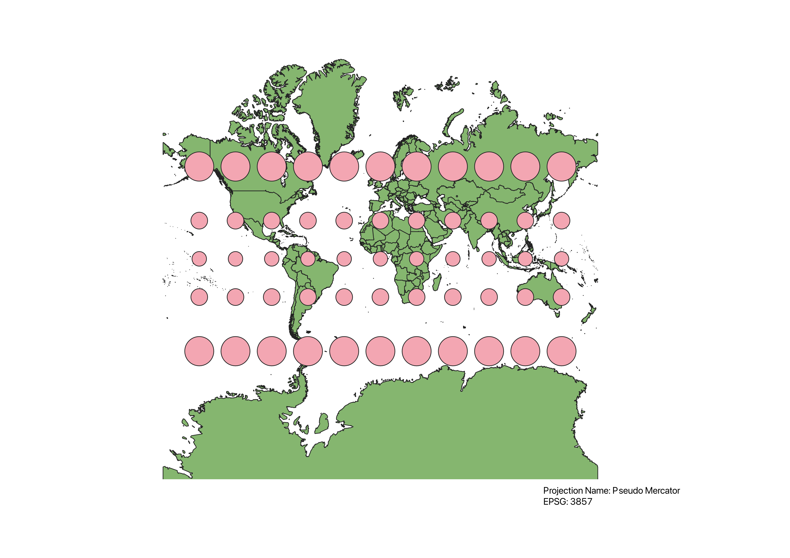

In this project I learned how to display images in different projections.
In QGIS I downloaded the plug in Indicatrix mapper for this assignment and used the diffrent projection winthiin the plug in to display all the World Projections I used. After displaying the projection to get a better sence of the diffrent distortions on every map.
WGS84 Projection
This projections is the one of the most used mapsout there. Most area is not distorted minus the poles because they are streached horizonally.

Aitoff Projection
This projection is more curved than some other maps. Is curved horisontally as well as virtically but is over all not too distorted.

Pseudo Mercator
This projection I personaly dont like because the land masses around the poles are so distorted. Greenland looks as big if not bigger than africa and aftica is 8 times the size of green land in actuality.

Sphere Wrinkle
This projection is by far is my favrorite when dealing with distortions within maps because mnsot of the map is not distorted much at all and it gives the map a curve whitch I personally like.

World Bonne
This map is crazy! This projection is only useful in my opintion when looking at the north pole because theres small distortion at the north pole but anywhere else this on this map the proportions are so streched. This map is also in the shape of a heart roughly.

World Cylindrical
The distortions in this map are mostly visable in the poles while everything in the middle has little change.Ive seen this map used in the world a few times as well.

World Equidistant
This projection is a top down view of the earth from the north pole with the distortion being so bad at the south pole its streached around almost the whole projection.

World Goode Homolosine
The distortion on this map is very minimal if you dont count greenland and antartica. I think how they cut and layed out this projection is lpretty amazing but would be bad for navogating the seas because the seas are distorted.

North Pole Azimuthal
This projection is very simmilar to World Equidistant but the main diffrence is the land is streached more around the globe.